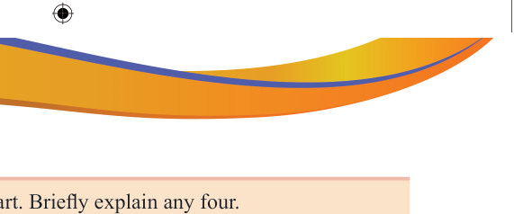

Revision Exercise
1.There are several forms of art. Briefly explain any four.
2.Form One students at Wamo Secondary School were given an assignment by their teacher to identify forms of fine art. Assume that they need assistance from you; briefly explain at least four forms to them?
3.Art manifestations are evident in various natural things. Identify any five insects that exhibit artistic expression.
4.There are many important roles that art plays in our lives. Describe five functions of art in human life.
5.Match the words related to visual arts in LIST A with their corresponding descriptions in LIST B.
LIST A
LIST B
A. Using colours to create artwork.
B. Producing a three-dimensional artwork by using materials such as clay, wood and stones.
C. Transferring images or symbols from a template to a surface.
D. Representing objects, forms or shapes using lines.
E. Using decorative patterns to create a work of art.
F. Showing works of fine art to the public.
G. The darkening or colouring of a drawing with lines or blocks of colour.
6.You have been walking around your school environment and found that there are some elements of art in many things in the school garden and other areas. Identify areas where art manifests itself in nature and human activities.
